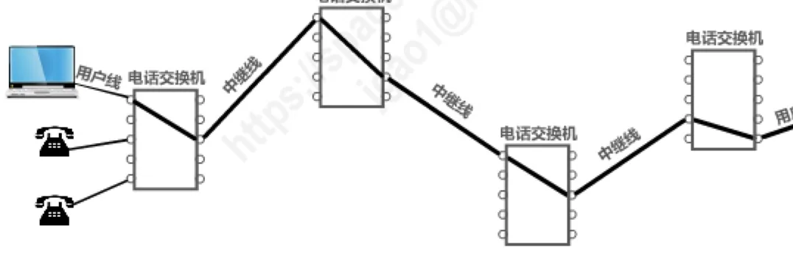
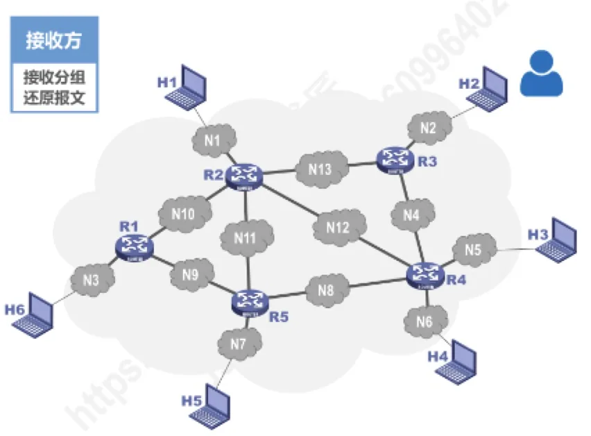
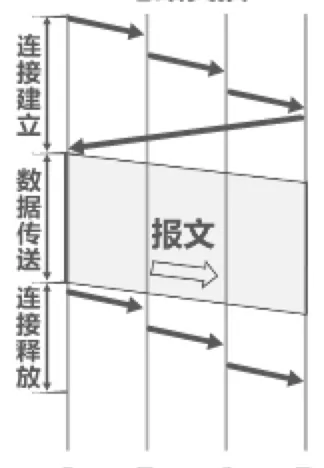

计算机通信与网络 · 第 1 章 概述
1.3 三种交换方式
上一节我们看到，因特网的核心部分由大量网络和路由器组成，它的任务是把数据从一个端系统送到另一个端系统。那么数据究竟是怎样在网络中走过去的？网络设备又凭什么决定把数据交给哪条线路？本节先讲清楚「交换」这个核心概念，再依次介绍电路交换、报文交换、分组交换三种技术，最后把它们放在一起比较优缺点。
1. 电路交换
最早、最直观的交换方式是电路交换（Circuit Switching），它直接来自电话网：两部电话机要通话，电话交换机必须先在它们之间接通一条实实在在的线路。因此教材把「电话交换机接通电话线的方式」称为电路交换。
从通信资源的分配角度看，交换（Switching）就是按照某种方式动态地分配传输线路的资源。这句话是理解三种交换方式的钥匙 —— 它们的差别，本质上就是「资源什么时候分、怎么分、分给谁」的差别。

电路交换的过程可以清楚地分成三个步骤：
- 建立连接：分配通信资源。主叫端发出呼叫，沿途的交换机逐段接通线路，为这次通话预留出一条端到端的通路；
- 通话：一直占用通信资源。这条通路在整个通话期间被双方独占，其他用户无法使用；
- 释放连接：归还通信资源。通话结束挂机，沿途的交换机把线路收回，供别人使用。
请特别注意「一直占用」这四个字。打电话时双方一直在说话，线路被占满并不浪费；可计算机数据是突发的 —— 用户读一条消息、敲几个字，真正用于传输的时间可能只占很小一部分。这时如果还独占一条线路，线路上绝大部分时间是空闲的，线路的传输效率往往很低。这正是电路交换不适合传送计算机数据的根本原因。
2. 报文交换
既然独占线路不划算，能不能不建立连接，让数据自己一段一段往前走？报文交换（Message Switching）就是这样做的：发送方把整个报文（一份完整的消息，例如一个文件）一次性交给相邻结点，结点先把报文完整地接收并暂时存储下来，再根据目的地址选择合适的出口转发出去，一站一站接力直到终点。这种工作方式称为存储转发（Store-and-Forward）。
与电路交换相比，报文交换不需要建立连接，线路可以动态地分配给多个用户共享，因而提高了线路可靠性和线路利用率；它还能把同一份报文发往多个目的地，即提供多目标服务。代价是：整份报文必须完整收到才能转发，结点需要较大的存储缓存空间；报文越长，中途滞留的时间就越久，转发时延明显；而且每个报文都要带上完整的目的地址等控制信息，需要传输额外的信息量。
3. 分组交换
分组交换（Packet Switching）可以看成报文交换的「化整为零」：既然等一整份报文太慢，那就把它切开。发送方先把较长的报文划分成若干个较短的等长数据段，再在每个数据段前面加上一个首部（header），构成一个个分组（packet）。首部里含有目的地址、分组序号等控制信息，这也是「需要传输额外信息量」的由来。
各分组独立地在网络中向前传送：路由器收到分组后先缓存分组，再查表转发分组；接收方收到这些分组后，按序号把它们还原成原来的报文。

分组交换的好处是明显的：分组很短，路由器转发一个分组的时延小，相当于加速了传输；缓冲区的管理也得到简化；某个分组传输出错只需重传这一个分组，减少了出错概率和重发数据量；线路由大量用户共享，利用率高；同时仍然不需要建立连接。
代价则在于：每一个分组在每一台路由器上都要经历一次存储转发，累加起来就是转发时延；首部要额外占用一部分传输能力；各分组可能沿不同路径到达，因此可能出现失序、丢失或重复。如果改用虚电路服务，则又要经历呼叫建立、数据传输和虚电路释放三个过程，等于把电路交换的开路拆路搬了回来。有关这两种服务的取舍，将在 4.2 节详细展开。
4. 三种交换方式的对比
把三种交换方式放在同一条时间轴上，差别就一目了然了：电路交换要经过建立连接、数据传送、连接释放三个阶段，一旦接通，比特流直达终点；报文交换和分组交换都属于存储转发，区别只在于转发的单位是整份报文还是一个一个分组。

再把三种方式各自的优缺点集中列成一张表，方便随时查对：
| 交换方式 | 优点 | 缺点 |
|---|---|---|
| 电路交换 | 通信时延小；有序传输；没有冲突；适用范围广；实时性强；控制简单 | 建立连接时间长；线路独占，使用效率低；灵活性差；难以规格化 |
| 报文交换 | 无需建立连接；动态分配线路；提高线路可靠性；提高线路利用率；提供多目标服务 | 引起了转发时延；需要较大存储缓存空间；需要传输额外的信息量 |
| 分组交换 | 无需建立连接；线路利用率高；简化了存储管理；加速传输；减少出错概率和重发数据量 | 引起了转发时延；需要传输额外的信息量；对于数据报服务存在失序、丢失或重复分组的问题，对于虚电路服务存在呼叫建立、数据传输和虚电路释放三个过程 |
一句话概括：电路交换是为「通话」设计的，分组交换是为「数据」设计的。因特网最终选择了分组交换，后面各章中网络层的分组转发、运输层的可靠传输，都是围绕分组交换展开的。
本节小结
- 交换（Switching）的本质是按某种方式动态地分配传输线路的资源，三种交换方式的差别就在于资源分配的方式；
- 电路交换：建立连接 → 通话 → 释放连接三个步骤，通路被独占，时延小、实时性强，但线路利用率低，不适合突发的计算机数据；
- 报文交换：以整份报文为单位存储转发，无需建立连接、线路利用率高，但要求结点有较大缓存，转发时延大；
- 分组交换：把报文切成带首部的分组，由路由器缓存转发、接收方还原，加速传输、减少重发量，代价是额外的首部开销与失序/丢失的可能；
- 因特网采用分组交换，具体采用数据报服务还是虚电路服务，见 4.2 节。